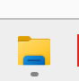

ダウンロードしたファイルを見つける
授業のPDFをダウンロードしたけど、どこに行った？ となったら、まずはエクスプローラーの「ダウンロード」フォルダーを見てください。
エクスプローラーを開く
画面下のタスクバーにある、下の画像のような黄色いフォルダーのアイコンをクリックします。見当たらなければ、Windowsキーを押しながら E を押しても開けます。

エクスプローラーが開いたら、左側の一覧から「ダウンロード」をクリックします。たとえばWebClassからPDFを落としたなら、まずここを探せばOKです。
見つけたらOneDriveの授業フォルダーへ
ダウンロードに配布資料を置きっぱなしにすると、あとでどの授業の資料か分からなくなります。私は、ダウンロードしたらなるべくその場でOneDriveの授業フォルダーに移すのをおすすめします。
- 「ダウンロード」で移したいファイルを選び、Ctrl＋X を押します。
- エクスプローラーで大学のOneDriveを開き、最初に作った授業フォルダー（たとえば「1年春」の中の「月1_教育原理」）を開きます。
- Ctrl＋V を押して、そこにファイルが入ったことを確認します。
エクスプローラーに大学のOneDriveが表示されていなければ、ブラウザで大学のOneDriveを開き、授業フォルダーにアップロードしてください。